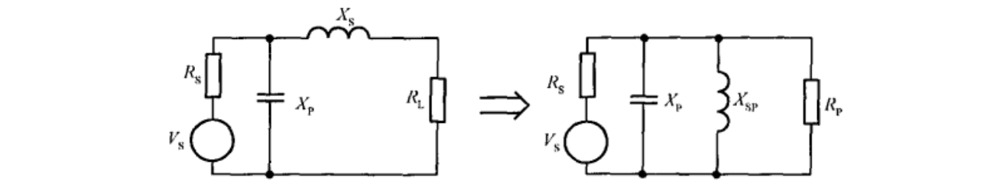
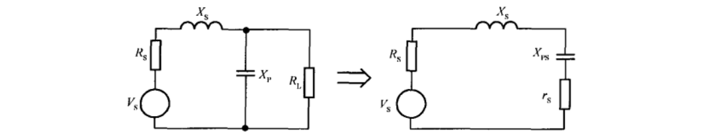
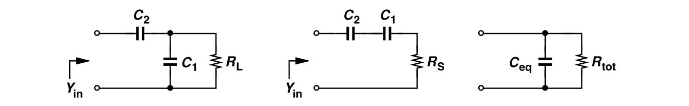

串并转换和阻抗变换
本文介绍了串联和并联电路的转换，以及Q值的计算。
串并联转换
串联->并联
并联->串联
谐振网络Q值的计算
串联或者并联谐振网络的Q值为
对于并联谐振网络且有多个电容的，为
其中$C_{tot}=\sum_nC_n$
阻抗匹配
L型
Rs>Rl

可得
Rs<Rl

可得
电容部分接入

当$Q\gg1$时，可将并联网络转换为串联网络，再将其转回并联网络。在第一次转换后，$C_1'\approx C_1,R_S=[(\omega C_1)^2R_L]^{-1}$；在第二次转换后，有
对于低Q电路而言，有
其等效并联电阻为
理论推导
这里包含上面三个结论的理论推导。
并联->串联
推导如下
相应的，交换顺序可得串联->并联。
实际并联LC网络的Q值
考虑一个具有Q值的电感和电容的并联谐振，其中电感常用串联LR模型，电容常用并联CR模型。
计算这个网络的等效Q值时，首先将串联的LR转换为等效并联LR，有
将两个电阻并联，有
于是整体Q值为
也即
值得注意的是，其中的$\omega$定义为
当串联电阻较小时可以简化为最后一项。
实际串联LC网络的Q值
另考虑一个具有Q值的电感和电容的串联谐振。
计算这个网络的等效Q值时，首先将并联LC转换为等效串联的LC，有
将两个电阻串联，有
于是整体Q值为
也即
此时，$\omega$定义为
当并联电阻较大时可以简化为最后一项。
参考
相关内容可以参考
- B. Razavi, RF Microelectronics.
- 李志群, 王志功, 射频集成电路与系统.
Related Posts
- Post link: https://triblemany.github.io/archives/abd732af/series-parallel-conversion.html
- Copyright Notice: All articles in this blog are licensed under BY-NC-SA unless stating additionally.